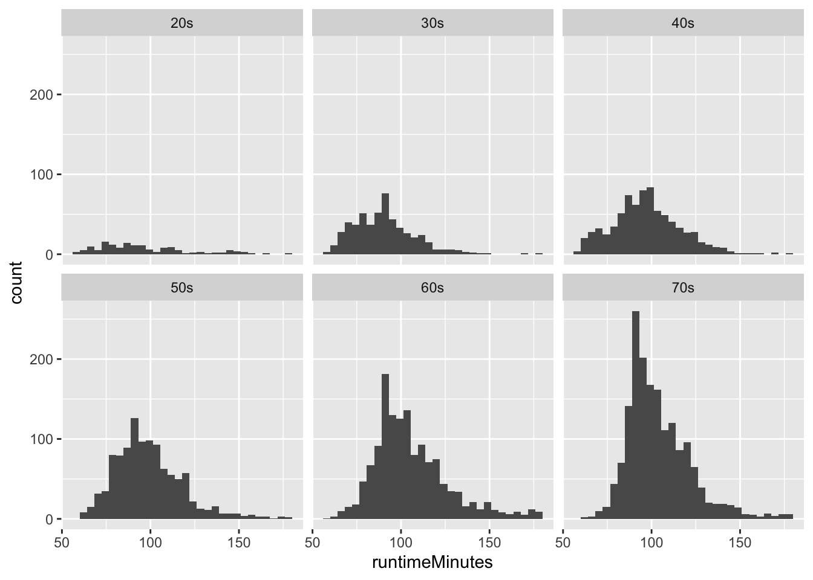
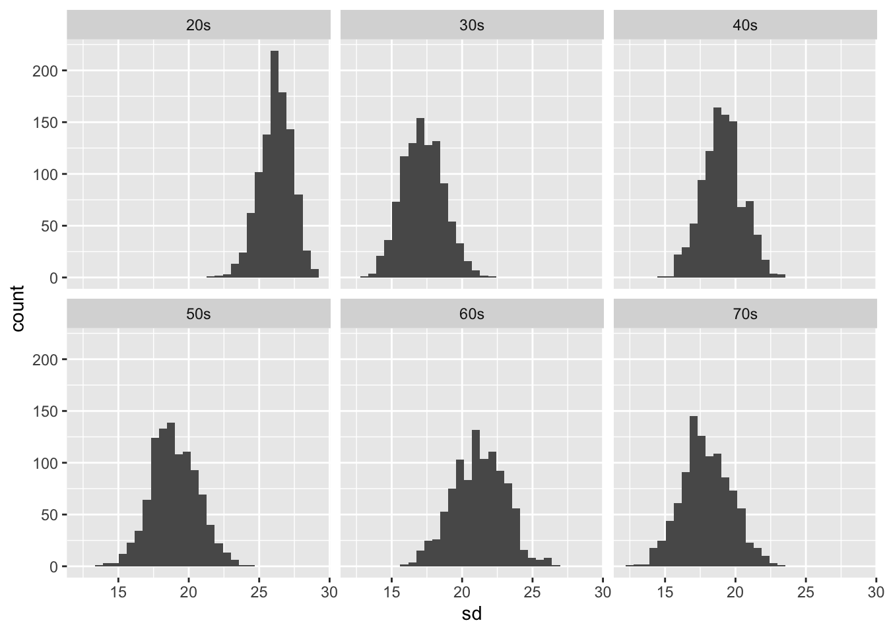
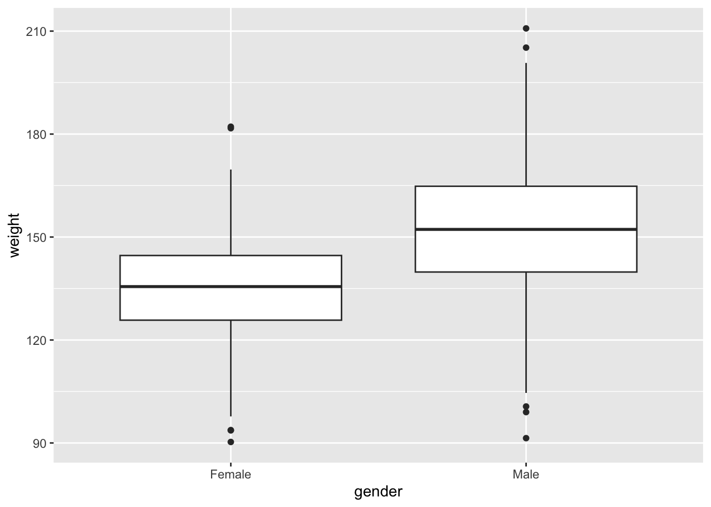
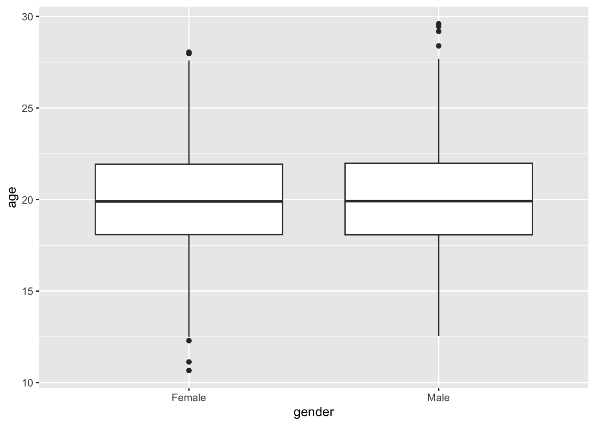
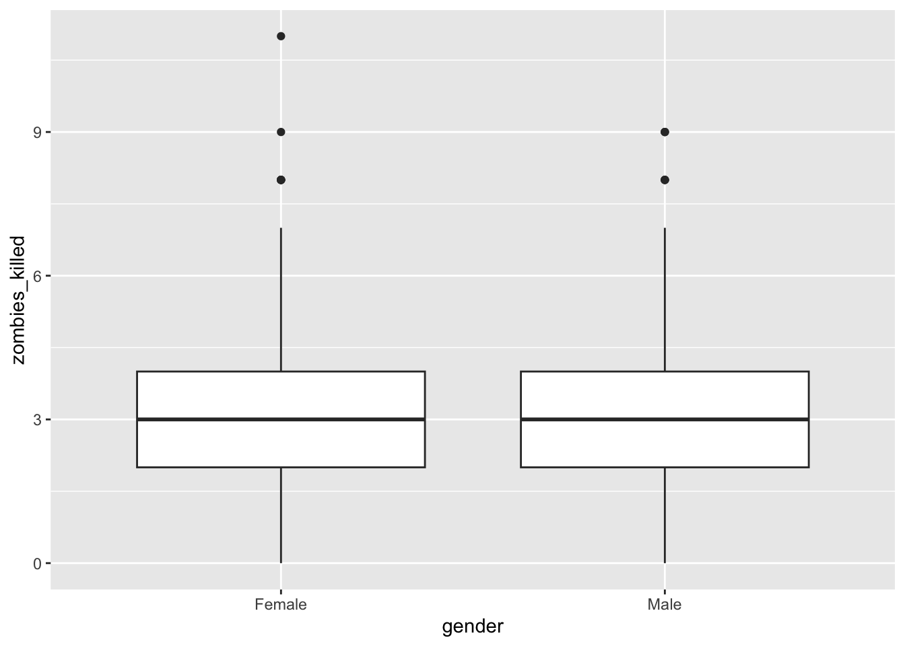
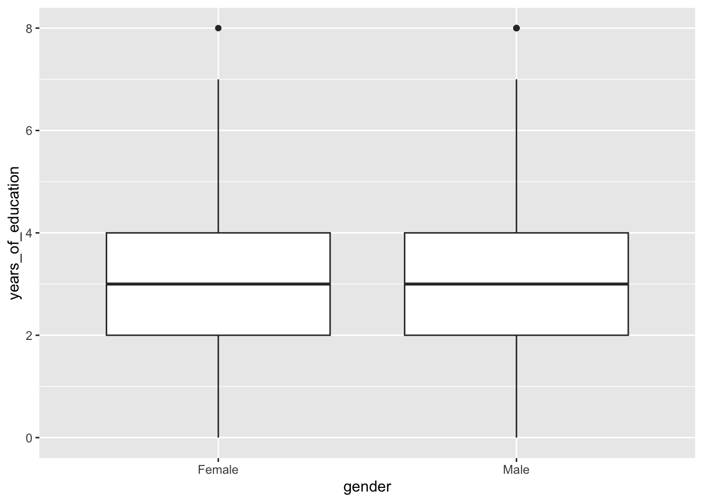
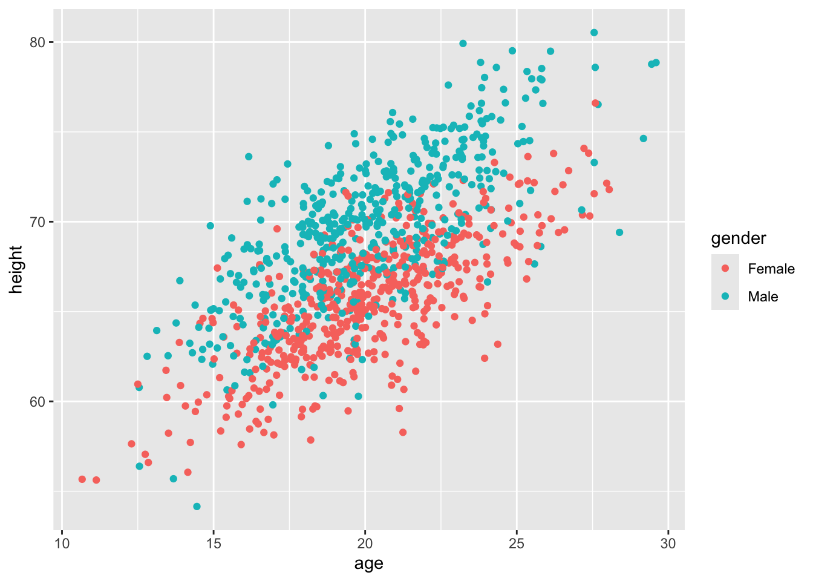
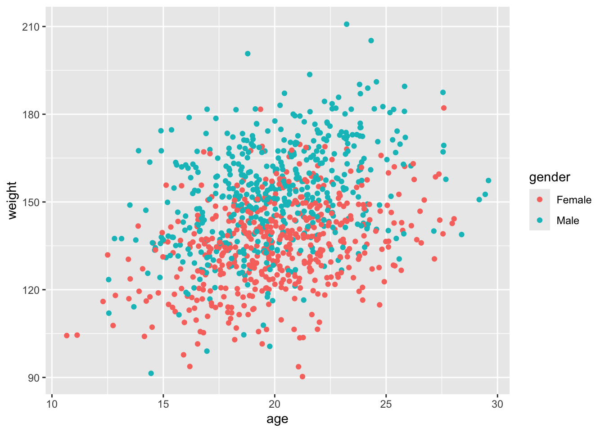
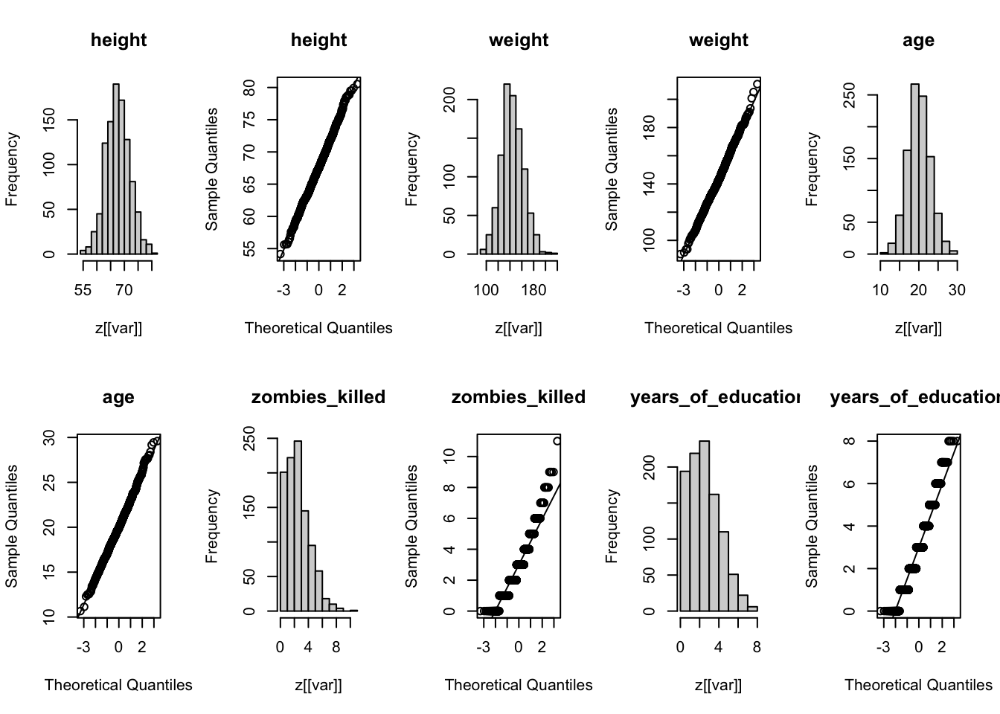

── Attaching core tidyverse packages ──────────────────────── tidyverse 2.0.0 ──
✔ dplyr 1.1.4 ✔ readr 2.1.5
✔ forcats 1.0.0 ✔ stringr 1.5.1
✔ ggplot2 3.5.1 ✔ tibble 3.2.1
✔ lubridate 1.9.3 ✔ tidyr 1.3.1
✔ purrr 1.0.2
── Conflicts ────────────────────────────────────────── tidyverse_conflicts() ──
✖ dplyr::filter() masks stats::filter()
✖ dplyr::lag() masks stats::lag()
ℹ Use the conflicted package (<http://conflicted.r-lib.org/>) to force all conflicts to become errors
library(mosaic)
Registered S3 method overwritten by 'mosaic':
method from
fortify.SpatialPolygonsDataFrame ggplot2
The 'mosaic' package masks several functions from core packages in order to add
additional features. The original behavior of these functions should not be affected by this.
Attaching package: 'mosaic'
The following object is masked from 'package:Matrix':
mean
The following objects are masked from 'package:dplyr':
count, do, tally
The following object is masked from 'package:purrr':
cross
The following object is masked from 'package:ggplot2':
stat
The following objects are masked from 'package:stats':
binom.test, cor, cor.test, cov, fivenum, IQR, median, prop.test,
quantile, sd, t.test, var
The following objects are masked from 'package:base':
max, mean, min, prod, range, sample, sum
library(dplyr)
Challenge 1
d <-read_csv("https://raw.githubusercontent.com/difiore/ada-datasets/main/IMDB-movies.csv")
Rows: 28938 Columns: 10
── Column specification ────────────────────────────────────────────────────────
Delimiter: ","
chr (6): tconst, titleType, primaryTitle, genres, nconst, director
dbl (4): startYear, runtimeMinutes, averageRating, numVotes
ℹ Use `spec()` to retrieve the full column specification for this data.
ℹ Specify the column types or set `show_col_types = FALSE` to quiet this message.
`stat_bin()` using `bins = 30`. Pick better value with `binwidth`.

results <- d %>%group_by( decade) %>%summarise(mean =mean(runtimeMinutes),sd =sqrt(mean((runtimeMinutes -mean(runtimeMinutes, na.rm =TRUE))^2)),se = sd/sqrt(100))d_sample <- d %>%group_by( decade) %>%slice_sample(n =100) %>%summarise(mean =mean(runtimeMinutes),sd =sd(runtimeMinutes))d_sample <- d_sample %>%mutate(se = sd /sqrt(100))# The sample means closely match the population means, confirming representativeness, while small differences arise from sampling variability. SE estimates are also similar but vary slightly due to sample SD fluctuations.reps <-1000n =100decades <-unique(d$decade)myList <-list()for (i in decades) { subset <- d %>%filter( decade == i ) sampling_dist <-do(reps) * { sampled_data <-sample_n(subset, size = n, replace =FALSE)tibble(mean =mean(sampled_data$runtimeMinutes), sd =sd(sampled_data$runtimeMinutes) )} myList[[i]] <- sampling_dist %>%mutate(decade = i)print(i)}
`stat_bin()` using `bins = 30`. Pick better value with `binwidth`.

# The shapes are normal distribution.# The mean estimated from the sampling distribution is overall very close to the direct measurement from the population. The SE estimated from the sampling distribution closely matches the theoretical population SE for larger decades (e.g., 70s) but is lower for smaller decades (e.g., 20s). This suggests that as population size increases, the sampling distribution better approximates the theoretical SE, while for smaller populations, resampling captures less variation, leading to an artificially lower SE estimate.
Challenge 2
z <-read_csv("https://raw.githubusercontent.com/difiore/ada-datasets/main/zombies.csv")
Rows: 1000 Columns: 10
── Column specification ────────────────────────────────────────────────────────
Delimiter: ","
chr (4): first_name, last_name, gender, major
dbl (6): id, height, weight, zombies_killed, years_of_education, age
ℹ Use `spec()` to retrieve the full column specification for this data.
ℹ Specify the column types or set `show_col_types = FALSE` to quiet this message.
ggplot(z, aes(x = gender, y = weight)) +geom_boxplot()

ggplot(z, aes(x = gender, y = age)) +geom_boxplot()

ggplot(z, aes(x = gender, y = zombies_killed)) +geom_boxplot()

ggplot(z, aes(x = gender, y = years_of_education)) +geom_boxplot()

ggplot(z, aes(x = age, y = height, color = gender)) +geom_point()

ggplot(z, aes(x = age, y = weight, color = gender)) +geom_point()

# Both height and weight show a positive correlation with age in both genders. However, the relationship between weight and age appears weaker, with more scattered points.vars <-c("height", "weight", "age", "zombies_killed", "years_of_education")par(mfrow =c(2, 5)) for (var in vars) {hist(z[[var]], main = var)qqnorm(z[[var]], main = var)qqline(z[[var]])}

# zombies_killed and years_of_education are not normally distributed. They are discrete and right-skewed, resembling a Poisson-like pattern.n =50z_sample <- z %>%slice_sample(n = n)ci <- z_sample %>%reframe(across(c(height, weight, age, zombies_killed, years_of_education),~mean(.x) +qnorm(c(0.025, 0.975)) * (sd(.x) /sqrt(n)) ))reps =199z_sample_all_stats <-do(reps) * { sample_z <- z %>%slice_sample(n = n) %>%reframe(across(c(height, weight, age, zombies_killed, years_of_education),list(mean =~mean(.x, na.rm =TRUE))))}z_sample_all_stats <- z_sample_all_stats[, -c(6:7)]z_sample_stats <- z_sample %>%reframe(across(c(height, weight, age, zombies_killed, years_of_education),list(mean =~mean(.x, na.rm =TRUE))))z_sample_all_stats <-rbind(z_sample_all_stats, z_sample_stats)z_sample_stats_stats <- z_sample_all_stats %>%reframe(across(everything(), list(mean = mean, sd = sd)) )z_sample_se <- z_sample %>%reframe(across(c(height, weight, age, zombies_killed, years_of_education),~(sd(.x) /sqrt(n))))# The standard deviations of the sampling distribution for each variable closely match the standard errors estimated from the first sample of size 50.for (i in1:5) {hist(z_sample_all_stats[[i]], main =colnames(z_sample_all_stats)[i])}# The sampling distributions for all variables appear approximately normal, even for those variables that were not originally normally distributed.sample_ci <- z_sample_all_stats %>%reframe(across(c(height_mean, weight_mean, age_mean, zombies_killed_mean, years_of_education_mean),~quantile(.x, c(0.025, 0.975)) ) )# The 95% CI derived from the sampling distribution are not exactly the same as those estimated from the first sample using the standard error formula, but they are similar.n_boot <-1000n <-50myList <-list()for (var in vars) { boot <-vector(length = n_boot) for (i in1:n_boot) { subset <-sample(z[[var]], n, replace =TRUE) boot[i] <-mean(subset) } myList[[var]] <-quantile(boot, probs =c(0.025, 0.975))}boot_ci <- boot_ci <-do.call(rbind, myList)# The 95% confidence intervals derived from bootstrapping are similar to those obtained from the sampling distribution in Step 9.